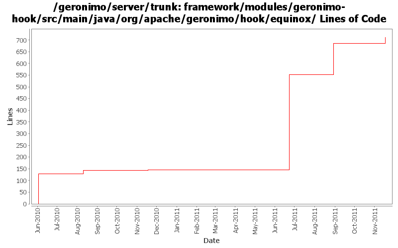

[root]/framework/modules/geronimo-hook/src/main/java/org/apache/geronimo/hook/equinox

| Author | Changes | Lines of Code | Lines per Change |
|---|---|---|---|
| Totals | 13 (100.0%) | 756 (100.0%) | 58.1 |
| gawor | 8 (61.5%) | 559 (73.9%) | 69.8 |
| xuhaihong | 5 (38.5%) | 197 (26.1%) | 39.4 |
Support getResources method for shared library
27 lines of code changed in 1 file:
Revert the changes GERONIMO-6132 Not search wired bundles in bundle classloader by default, as it brought some issues for app client
1 lines of code changed in 1 file:
GERONIMO-6132 Not search wired bundles in bundle classloader by default
36 lines of code changed in 1 file:
GERONIMO-5734 Enable sharelib in osgi based geronimo
133 lines of code changed in 2 files:
GERONIMO-5744: Support for Equinox-specific classloader that can convert bundle:// urls into regular file:// or jar:// urls and make things easier for 3rd party libraries. The Equinox-specific classloader is disabled by default for now
413 lines of code changed in 4 files:
ensure we are adding a non-empty package list
3 lines of code changed in 1 file:
GERONIMO-5480: Prevent Equinox from adding AllPermission permission to each bundle
15 lines of code changed in 1 file:
GERONIMO-5205: On Equinox use ClassLoadingHook to add necessary JPA provider imports to the persistence bundle.
128 lines of code changed in 2 files: